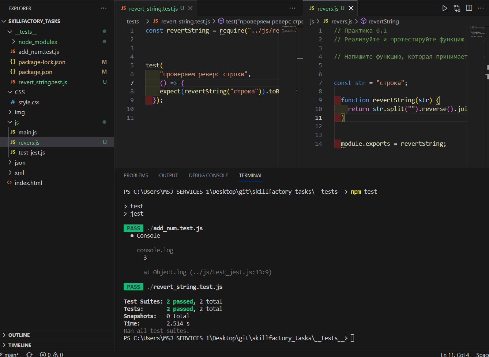
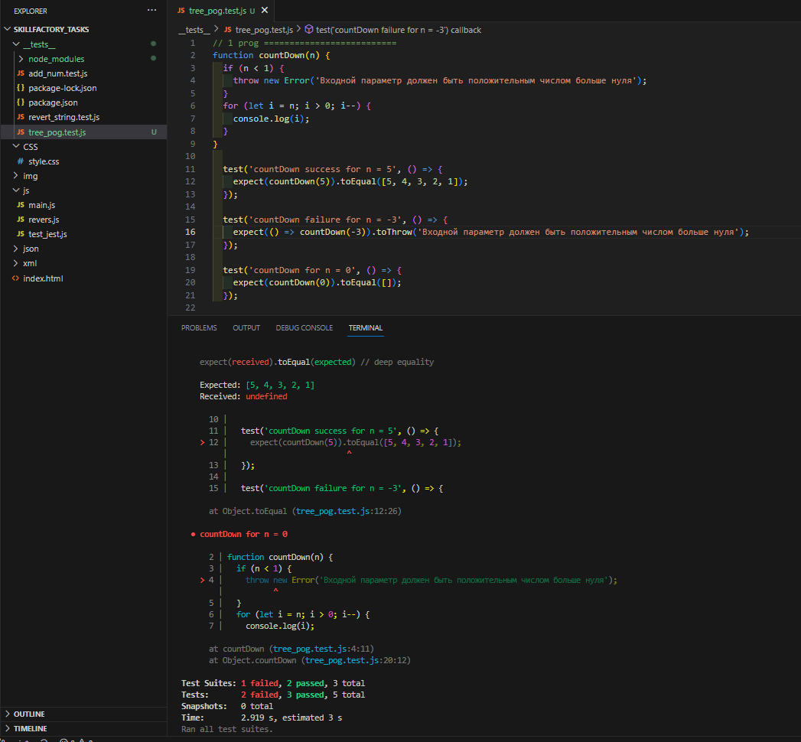

2/11 10.1. JSON vs XML
номер задачи №1
номер задачи №2
номер задачи №3
номер задачи №4
номер задачи №5
3/8 11.2. SVG
Задание 1
Сверстайте кнопку, которая будет содержать в себе icon_01 https://icons.getbootstrap.com/icons/arrow-down-left-circle/ (как в примере в последнем видео).При клике на кнопку иконка должна меняться на icon_02 https://icons.getbootstrap.com/icons/arrow-down-left-circle-fill/ Повторный клик меняет иконку обратноЗадание 2
Сверстайте кнопку, клик на которую будет выводить данные о размерах экрана с помощью alert.Задание 3
Задание 3 1 Реализовать чат на основе эхо-сервера wss://echo-ws-service.herokuapp.com. Интерфейс состоит из input, куда вводится текст сообщения, и кнопки «Отправить». При клике на кнопку «Отправить» сообщение должно появляться в окне переписки. Эхо-сервер будет отвечать вам тем же сообщением, его также необходимо выводить в чат: 2 Добавить в чат механизм отправки геолокации: При клике на кнопку «Геолокация» необходимо отправить данные серверу и вывести в чат ссылку на https://www.openstreetmap.org/ с вашей геолокацией. Сообщение, которое отправит обратно эхо-сервер, выводить не нужно.5. Фреймворки для написания тестов
Задание 5.1
Настройте тестовое окружение JEST.
Задание 6.1
Реализуйте и протестируйте функцию (проведите хотя бы один тест). Напишите функцию, которая принимает строку и возвращает эту строку в перевёрнутом виде (например, “строка” — “акортс”). Задание 6.2
продумайте тест-кейсы (успешное/неуспешное выполнение функции);продумайте граничные случаи (corner case);
напишите юнит-тесты (минимум три). 
5. Слайдер с фото
Слайдер с фото
Требуется установить следующие управляющие элементы:Стрелки — переключают слайды по кольцу. То есть после слайда №3 снова откроется слайд №1.
Кружочки между стрелками — включают нужный слайд.
Ссылки над слайдером — включают нужный слайд.